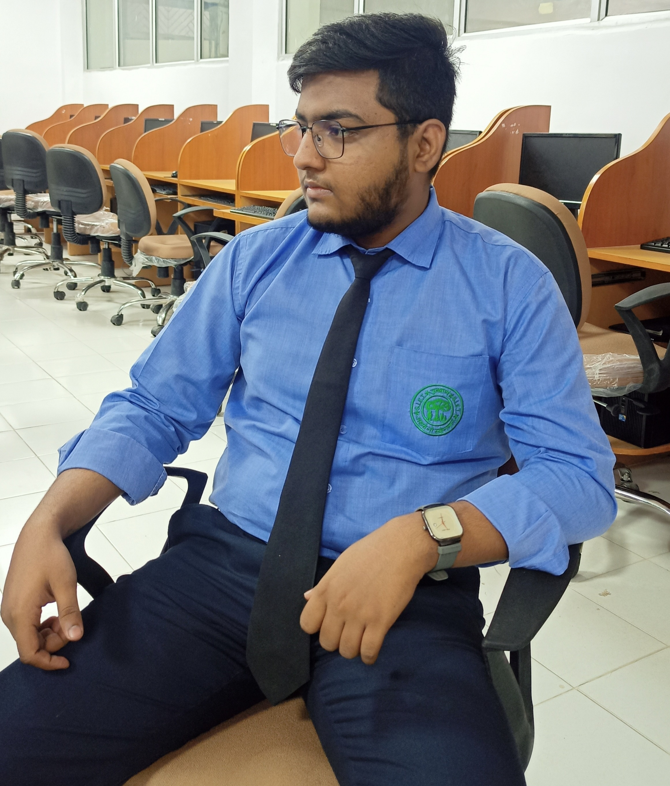

Contact : 9555179***
Mail : md.amil20**@gmail.com
Linkedin : linkedin.com/in/mohammad-amil-159129**b
|  | I am a dedicated and results-oriented professional with a strong passion for Computer Science. I am a self-motivated individual with excellent problem-solving and communication skills, capable of working both independently and collaboratively within a team. With a keen attention to detail and a drive for continuous learning, I am eager to contribute my skills and make a positive impact in a Software Industry within a dynamic organization. |
Build using pure Hyper Text Markup Language
Hosted Link : https://mdamill.github.io/Resume/
Any job which is halal , future proof and has a probability of higher growth in future . (I'm still exploring)
I don't have any specific hobby , but anything related to technology interest's me . Besides I like cooking , and helping and guiding people who are not exposed to right information .
Well , I used to consume a lot of educational and trending content , specially related to Internet .For rest you could always ask me personally .
I was born in 2003 .
A pier group , with whom one could achieve an elite aim ; and most importantly serious,aware and helping Seniors .